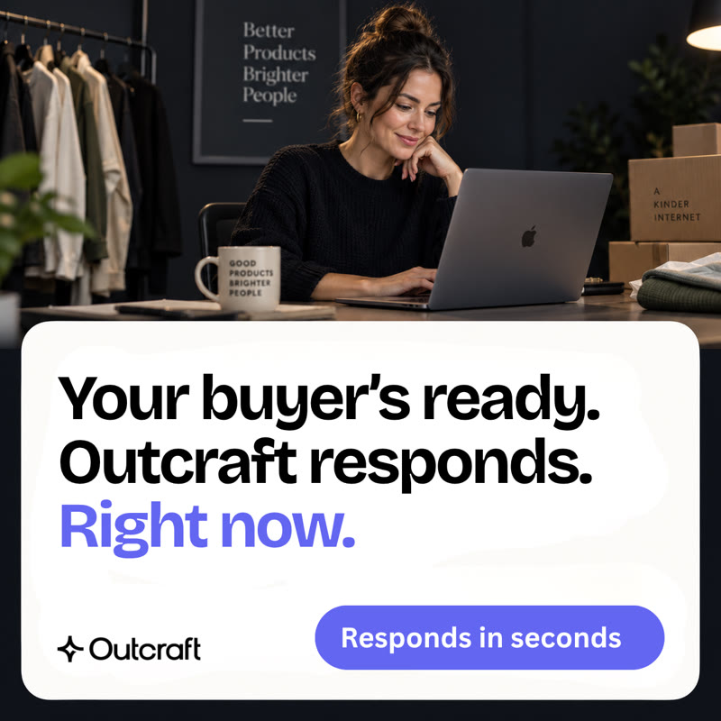
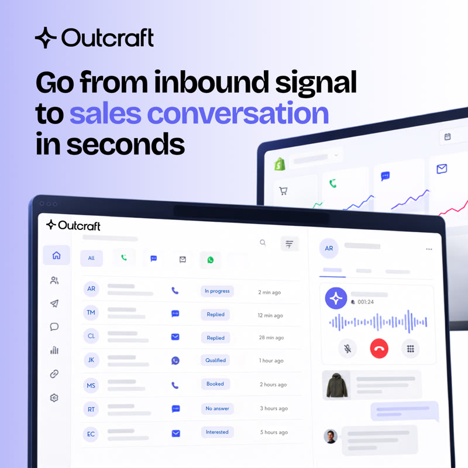
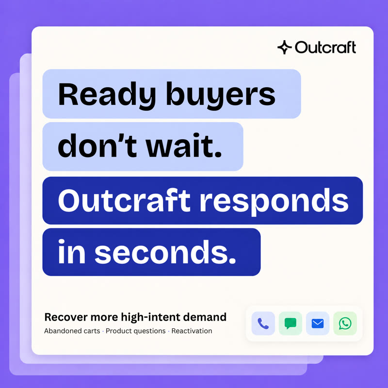

Outcraft AI
Building creative for an AI sales platform
At Outcraft, I work across the full creative process: campaign ideas, founder content, paid social creative, video, visual assets and launch campaigns for ecommerce and B2B audiences.
I use customer insights, campaign performance and market research to find new ways of explaining the product, then turn those ideas into finished creative.
Ad creatives · Meta & LinkedIn


